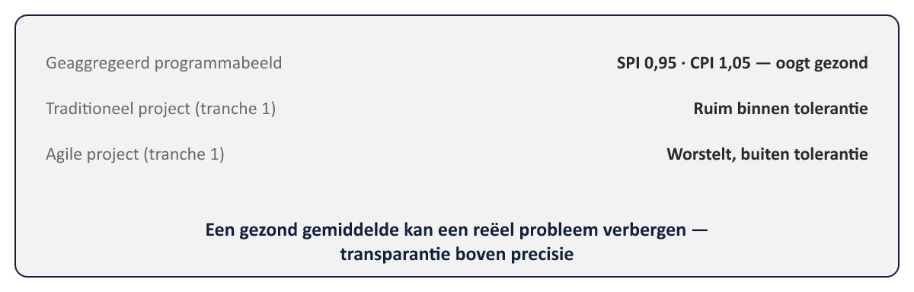
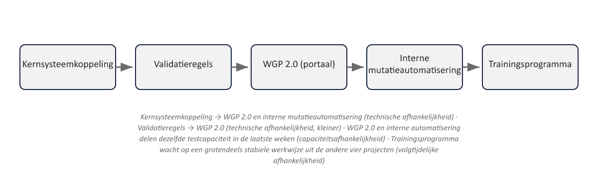

Sheet 1Titel
Project- en Programmamanagement
Niveau 2 · Deel 17: Planning en beheersing op programmaschaal
Sheet 2Meer dan een optelsom
Vijf projectplannen naast elkaar ≠ een programmaplan
Wat erbij komt: afhankelijkheden, capaciteit, aggregatie
Sheet 3Drie soorten afhankelijkheden
- Technisch — output van het ene project nodig voor het andere
- Capaciteit — gedeelde schaarse mensen/middelen
- Volgtijdelijk — inhoudelijke afhankelijkheid zonder gedeelde techniek
Sheet 4Het afhankelijkheidsnetwerk
| Product Flow Diagram (binnen één project) | Programmabreed afhankelijkheidsnetwerk | |
|---|---|---|
| Toont | Producten en hun onderlinge volgorde | Projecten en hun onderlinge afhankelijkheden |
| Detailniveau | Fijn — elk product binnen het project | Grof — welke projecten op elkaar wachten |
| Vergelijkbaar met | PRINCE2 (niveau 1, deel 4) / netwerkplanning IPMA-D (niveau 1, deel 9) | Eén niveau hoger dan projectplanning |
Grover detailniveau dan een PFD — welke projecten wachten op elkaar
Sheet 5Resourcemanagement op schaal
Resource management strategy + plan
Programme Office: signaleren vóór het tot vertraging leidt
Sheet 6Schaars specialisme vs. generieke capaciteit
Schaars → expliciete prioritering, vaak Programme Board
Generiek → lichtere coördinatie
Sheet 7EVM op programmaschaal
Aantrekkelijk: één geaggregeerd beeld voor de Programme Board
Lastiger dan het klinkt
Sheet 8Twee complicaties
- Verschillende voortgangsdefinities (agile vs. traditioneel)
- Verschillende maateenheden (story points vs. producten)
Sheet 9De sleutel: transparantie, niet precisie
Een grove, transparant onderbouwde SPI/CPI > vijf losse verhalen

Sheet 10Sequencing en tranches
Afhankelijkheden en capaciteit onderbouwen de tranche-indeling uit deel 15
Een tranche-indeling die dit negeert, is onuitvoerbaar
Sheet 11Governance cadans
Maandelijkse Programme Board
Frequentere risico-/afhankelijkheidsreviews op Programme Office-niveau
Sheet 12Toegepast: Programma Mutatieplatform

Kernsysteemkoppeling en validatieregels als vroege knooppunten
Gedeelde testcapaciteit WGP 2.0 / interne automatisering
Sheet 13Vooruitblik
Deel 18: risico’s en issues over project- en programmagrenzen